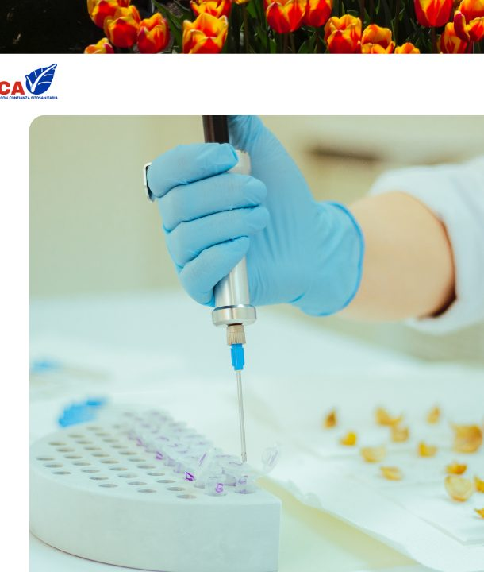
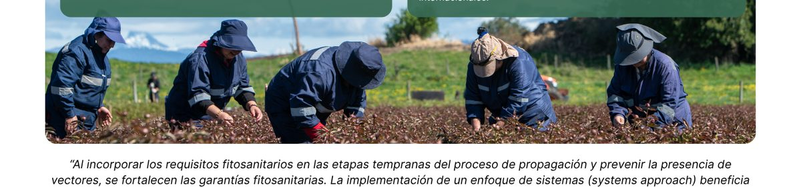

Como corporación independiente sin fines de lucro, SCA mejora la calidad y sanidad de bulbos, plantas ornamentales, plantas frutales jóvenes y otros cultivos, facilitando su acceso seguro y competitivo a mercados nacionales e internacionales.
Nuestro objetivo es mejorar continuamente la sanidad vegetal y fortalecer la confianza de productores, exportadores e importadores, siendo un referente en innovación y competitividad agrícola.
Proveer servicios de certificación, inspección y asistencia técnica que respalden a productores, exportadores, importadores y autoridades fitosanitarias (NPPOs), promoviendo altos estándares de calidad, sostenibilidad y prácticas agrícolas seguras.
Ser un referente en Chile y a nivel internacional en la implementación de soluciones fitosanitarias innovadoras, fomentando la cooperación público-privada y contribuyendo al desarrollo de una agricultura competitiva, sostenible y con acceso fluido a los mercados internacionales.

“Al incorporar los requisitos fitosanitarios en las etapas tempranas del proceso de propagación y prevenir la presencia de vectores, se fortalecen las garantías fitosanitarias. La implementación de un enfoque de sistemas (systems approach) beneficia al país importador, al cliente y al productor, al mejorar la seguridad fitosanitaria, la calidad del producto y la gestión de riesgos.”
SCA ofrece servicios especializados de certificación, inspección y asistencia técnica, asegurando el cumplimiento de las normativas nacionales e internacionales vigentes, y promoviendo. También somos terceros autorizados por el Servicio Agrícola y Ganadero (SAG) para ejecutar tratamientos fitosanitarios y garantizar el cumplimiento de las normativas oficiales.

SCA participa activamente en el mantenimiento del sistema de inspección en campo para lilium, el cual tiene un impacto en la exportación de bulbos chilenos de esta especie. Gracias a los más altos estándares aplicados a los bulbos madre a nivel mundial, productores y exportadores pueden ofrecer bulbos de lilium mediante un proceso fitosanitario integral, eficiente y confiable.
Asimismo, para otros cultivos ornamentales, la SCA participa en el desarrollo de sistemas de inspección en campo y en la realización de inspecciones fitosanitarias. Cultivos tales como tulipanes, jacintos, narcisos, Hippeastrum, entre otros, comparten un mismo objetivo: alcanzar los altos estándares de calidad de los países líderes en producción a nivel mundial.
Puedes conocer en detalle nuestros servicios de capacitación, importación, tratamientos fitosanitarios y nuestro enfoque de systems approach en la sección de Servicios.